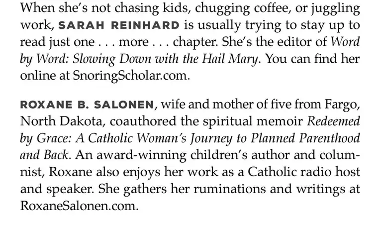
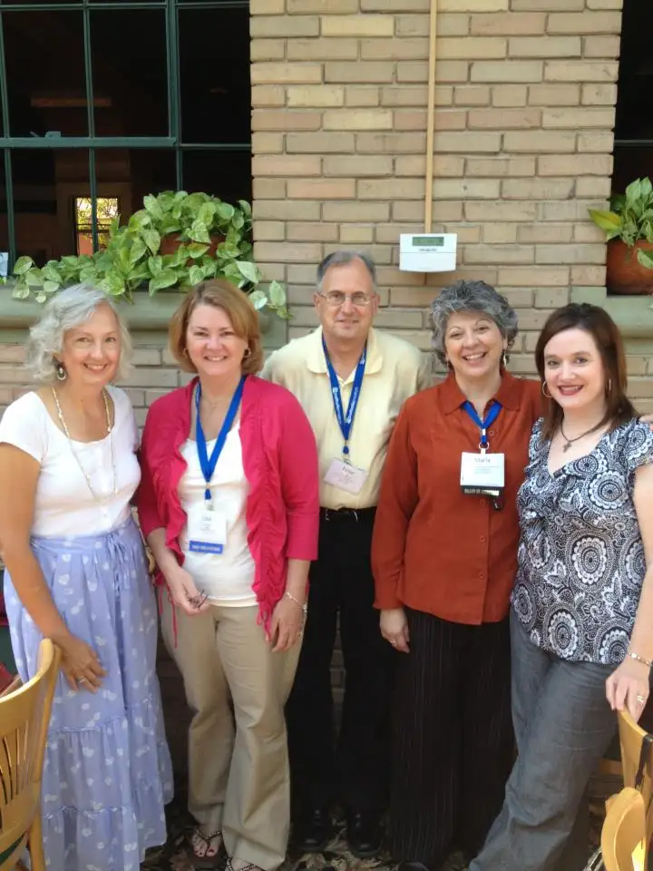
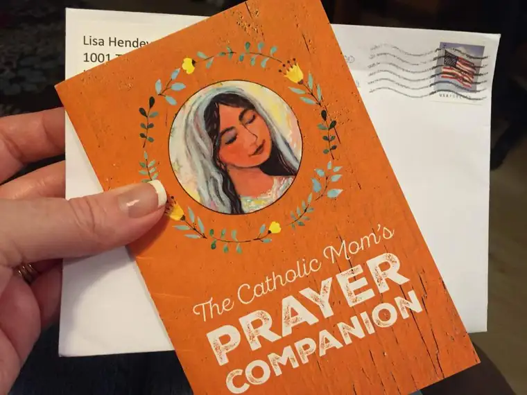
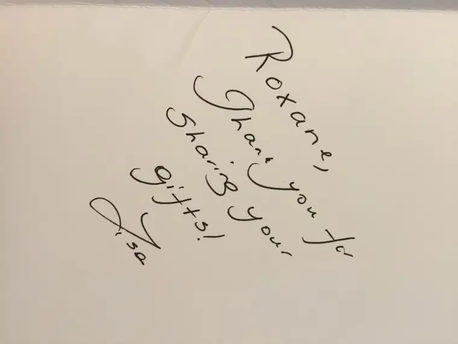
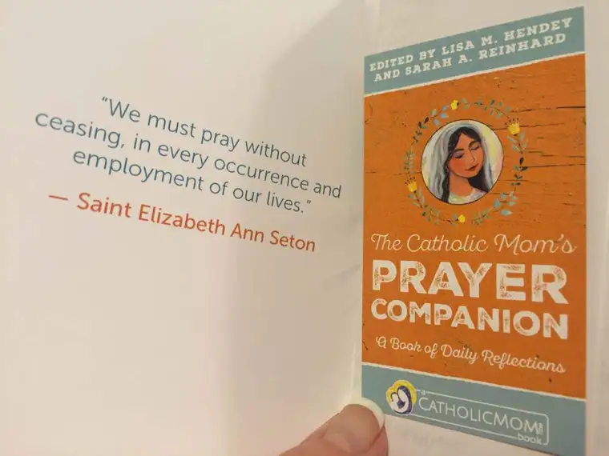

Before this week, all I knew about the little prayer book’s release was that it would be out sometime around Fall 2016; this was the expected launch of the compilation carried out by Catholicmom.com founder Lisa Hendey and her counterpart, Sarah Reinhard. But this week, I’ve learned a new, more specific timeline: August 2016! (There it is, third from the left!)

Lisa had invited contributors of her award-winning faith website to be part of the project bringing together 80 writers and a whole lot of prayer into one little book — a devotional that can be savored the whole year through. Blessedly, I’m among them.

Not only have I come to respect Lisa’s work from afar, but I’ve had the chance to hang out with her up close. We roomed together at the 2012 Catholic Media Conference in Indianapolis (she’s second to left and I’m far right). So I know she’s the real deal — a great editor with a good heart and an eye for meaningful writing.
It was a joy for me to work on my contributions. But the really fun thing about this is that while my small part will be included, I have yet to read the other contributors’ entries. Which means only three will be known to me, and 362 will be a surprise — fresh reflections from fellow Catholic mothers that I, too, can savor.
It’s both a gift from me and to me all at once, and, I dearly hope, a welcomed treasure for you as well.
This week, a taste of what’s coming arrived in the mailbox.


A little from the Amazon description:
Created by moms for moms, these hope-filled meditations touch on the issues and concerns you face as you try to get through the day with a sense of God’s presence in your life. Whether you are a new or seasoned mom working in or outside of your home, this inspiring collection of reflections for every day of the year will help you:
- stay in touch with the seasons of the Church year
- remember Mary’s loving presence on her feast days
- keep company with both new and familiar saints
- see the spiritual meaning of secular holidays, and
- make you smile with occasions such as Houseplant Appreciation
Day and National Popcorn Day.
I’m so grateful for the chance to have this beautiful prayer companion to help lead me through the year ahead. More than at any other time, it seems we really need to be sustained by prayer right now.

If you’re the type to get a jumpstart on such things, pre-orders are already happening at Amazon, so head over there to claim your copy.
I’ll be giving away a free prayer book in the future, too, so stay near for a chance to win one.
Finally, no prayer book would be complete without a whole lot of prayer behind it. I ask for prayer here often, and am always grateful for the quiet response — petitions brought graciously to the feet of the Lord of the universe. If you could spare one for this project’s success, the whole crew involved with this would be mighty appreciative. The gain for us is not financial, but spiritual.
Q4U: What and/or whom companions with you most closely through your spiritual life?